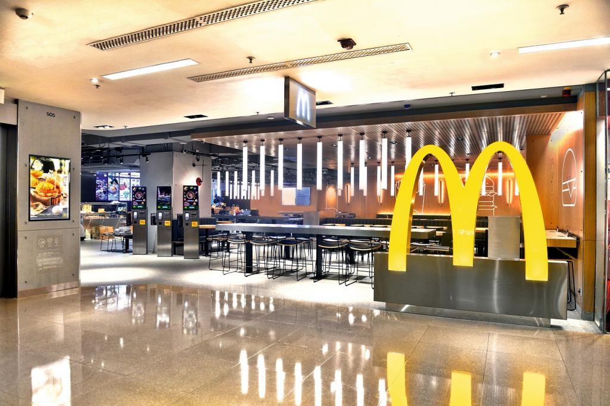

<thml>
<head>
<title>環境</title>
</head>
<body>
<h1><font face="微軟正黑體"color="#787878" size="8">麥當勞環境</font></h1>
          
為了確保顧客吃得美味又安心，麥當勞餐廳固定進行清潔及消毒程序：<br>
烹調區：生、熟食手套分開使用，多一層衛生。工作人員每個小時洗手一次。<br>
用餐區：每日定時消毒用餐區，乾淨又衛生。<br>
廁所區：每日定時巡視，即時清潔，隨時保持環境乾淨。<>br
兒童遊戲區：每日定時清潔消毒，讓孩子玩得開心又安心。<p>
<hr>



<p>
          
<a href="index.html">麥當勞介紹第一頁</a>
<a href="2m.html">菜單</a>
<a href="3m.html">歷史</a>
<a href="5m.html">心得</a>
          
<iframe width="560" height="315" src="https://www.youtube.com/embed/jpn5yCLA_9U" frameborder="0" allow="accelerometer; autoplay; encrypted-media; gyroscope; picture-in-picture" allowfullscreen></iframe>

</body>
</thml>
